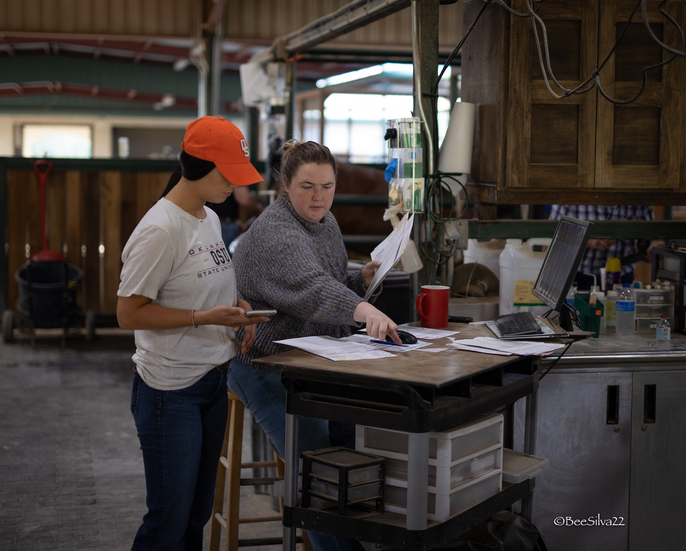

The status quo
Million-dollar workflows.
Paper binders.
- 20–40 mares across multiple ranches, all tracked by hand
- One missed Lutalyse injection resets a $2,000 cycle
- Embryo grades scribbled on sticky notes, lost by Friday
- Client calls about frozen inventory answered from a drawer

How Ovum fixes this
Every mare. Every protocol.
One screen.
- Open the app at 6 AM — tasks sorted by priority, overdue first
- Log a flush with IETS grading in under 30 seconds
- Full protocol timeline per mare, synchronized automatically
- Works offline in every dead-zone barn